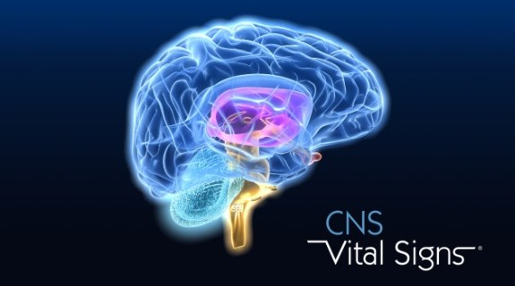

10+ cognitive domains evaluated
Memory, attention, processing speed, executive function, and other cognitive functions are evaluated in one sitting.
Computerized Neurocognitive Test
Comprehensively evaluating current cognitive function, from memory and attention to executive function.

CNS Vital Signs (CNSVS) is a standardized, computer-based neurocognitive test.
It objectively evaluates several cognitive domains of the brain — memory, attention, information processing speed, and executive function — to check current cognitive status and to compare changes before and after treatment or over the course of a condition.
At MoonGyeol, we use CNSVS to evaluate cognitive decline, adult ADHD, brain fog, and cognitive changes related to sleep and stress.
Memory, attention, processing speed, executive function, and other cognitive functions are evaluated in one sitting.
Results are compared against standardized data for the same age group to identify strengths and difficulties in each domain.
Changes in cognitive function before and after medication, cognitive rehabilitation, or sleep/stress treatment can be objectively compared.
A visualized report of each cognitive domain's results is available as soon as testing ends.
CNSVS is not a simple memory test — it comprehensively evaluates the brain's core cognitive functions.
The ability to learn and remember words and information
The ability to remember and recall shapes or images
The ability to focus on needed information amid multiple stimuli
The ability to maintain concentration over a period of time
The speed of recognizing and responding to a stimulus
The ability to understand and process information quickly
The ability to plan, judge, solve problems, and control impulses
The ability to shift thinking and behavior as rules change
Fine motor function measured through a finger-tapping task
The ability to understand patterns and rules to solve problems
Results are provided not only as domain-specific scores but also as an overall Neurocognition Index (NCI) and a domain-by-domain profile.
At MoonGyeol, the items administered are matched to the purpose of the clinical evaluation.
Checking current symptoms and the purpose of testing.
Evaluating multiple cognitive domains by completing tasks shown on screen.
Generating a domain-by-domain cognitive function report compared against age norms.
Interpreting the results comprehensively together with the clinical evaluation.
The test takes about 30 minutes. It is administered by computer, and a results report is available as soon as testing ends.
When you feel your memory isn't what it used to be
Wanting an objective check of attention and executive function
Feeling cognitive decline after lack of sleep or stress
Wanting to objectively compare before and after treatment, or over time
Memory decline present and further cognitive assessment is needed
Needing to look at attention and cognitive function in children and adolescents
CNSVS provides a report that visually shows the strengths and weaker areas of cognitive function. The results let you check the following.
At MoonGyeol, we don't judge results in isolation — they're interpreted comprehensively together with the clinical evaluation and other test results (QEEG, CAT, MCI screening, comprehensive psychological evaluation, and more).
When memory decline or mild cognitive impairment is suspected, we objectively evaluate cognitive function.
Together with CAT, attention and executive function can be examined more three-dimensionally.
We can look at how sleep problems or stress are affecting cognitive function.
Can be used to compare cognitive changes before and after medication, TMS, cognitive rehabilitation, and other treatments.
Q. What's the difference between CAT and CNSVS?
CAT is an attention-focused test. It concentrates on ADHD-related visual/auditory attention, sustained attention, working memory, and more. CNSVS is a test that comprehensively evaluates overall neurocognitive function — memory, processing speed, executive function, and more. When needed, both tests can be given together for a more three-dimensional evaluation.
Q. Does it diagnose dementia?
No. CNSVS objectively evaluates cognitive function, and is not a test that diagnoses dementia or mild cognitive impairment on its own. Where needed, history, clinical evaluation, neurocognitive testing (such as SNSB), QEEG, and MCI screening are considered together.
Q. Can children and adolescents take it?
Yes. CNSVS is a computerized neurocognitive test usable from age 8 through older adulthood, and results are interpreted against age-appropriate norms.
Q. Are results available right away?
Yes. A domain-by-domain cognitive function report is generated as soon as testing ends, and the specialist explains the results along with any treatment plan needed.
※ CNSVS is a supportive neurocognitive test that objectively evaluates cognitive function. Results alone do not diagnose a specific condition — they are interpreted comprehensively together with the specialist's clinical evaluation and symptom assessment.
We'll look at your current symptoms and condition together and suggest the assessment you need.